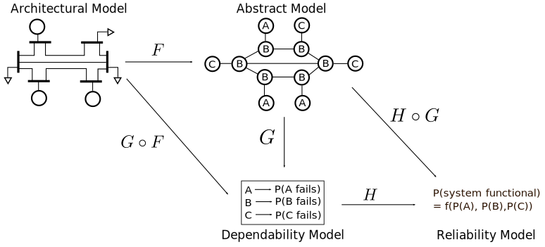

Currently working on a Ph.D in Computer Science, advised by Dr. Sahra Sedigh at Missouri S&T.
Generating models for every aspect of a system is a labor-intensive and error-prone process. My work focuses on defining transformations from one type of system model to a different type of model, allowing developers to derive models of various system aspects easily. Initially I will focus on transforming system architecture models to non-functional attribute models; for example, transforming an architectural model of a power grid into a reliability model. Ultimately I will expand this work to arbitrary model transformations. Any model that can be deterministically transformed must be deterministically specified; these deterministic specifications can be converted into abstract mathematical models. In this framework, transformations then become functions mapping one model to another. Formalizing modeling in this fashion allows us to apply a wealth of research on transforming mathematical structures.
